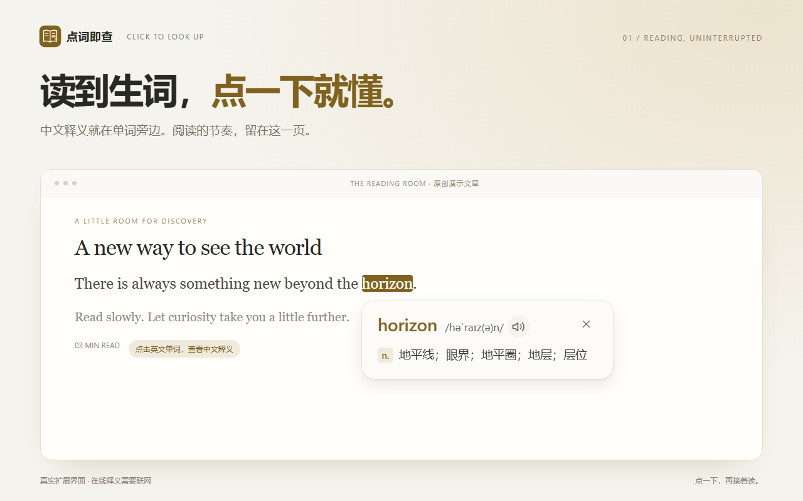
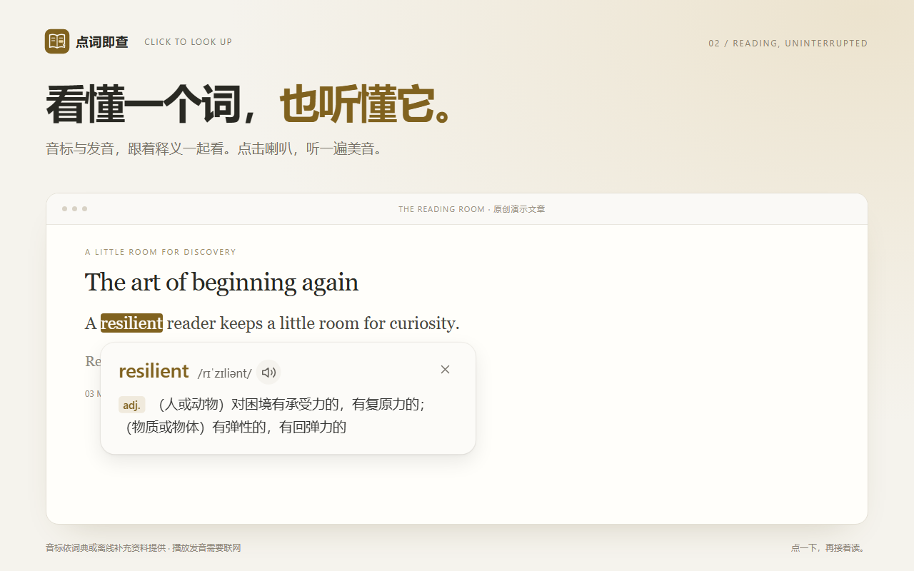
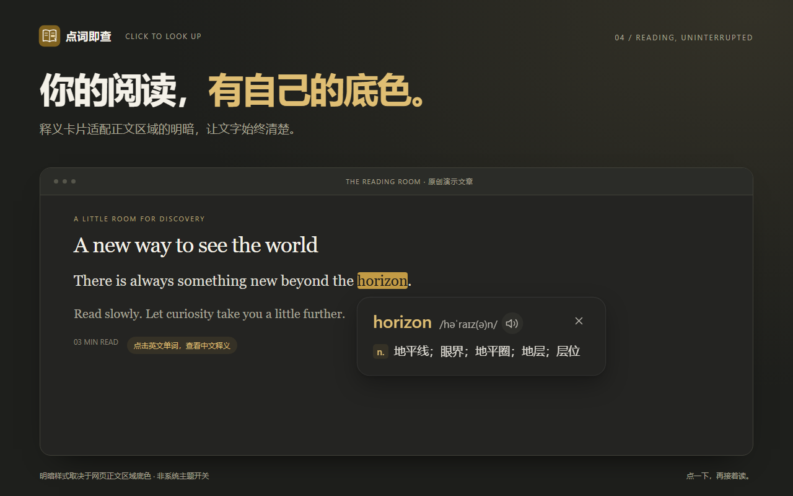
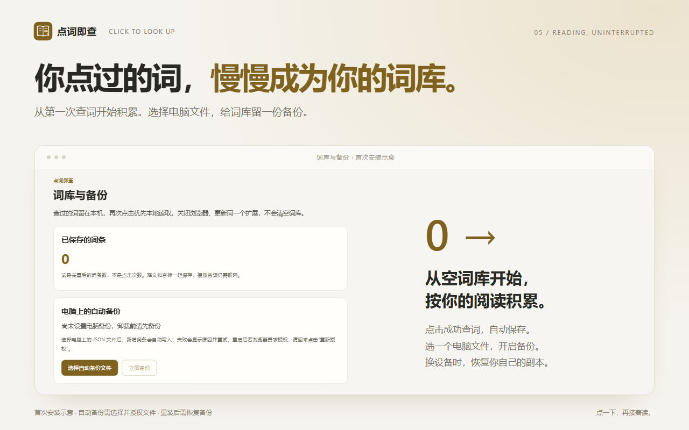

01 / READ
释义就在阅读里
点击普通网页中的英文单词。完整结果准备好再展示，等待较久时会提示“查询中…”。
释义、音标与发音，就在单词旁边。
看懂之后，接着读。
Chrome Web Store 上架准备中。商店安装入口将在正式发布后添加。
首次查词及发音会将该单词发送给有道，成功查询的释义保存在本机。

点击普通网页中的英文单词。完整结果准备好再展示，等待较久时会提示“查询中…”。
个人释义词库从空开始，成功查词后后台保存。再次点击优先本地读取，已保存释义可以离线查看。
选择并授权电脑上的文件，开启自动备份。换设备或重新安装后，可以主动恢复自己的词库。
暖白与深灰的卡片适配正文区域的底色。音标和发音按钮就在词头旁边，需要时点一下，读完后收起来。


不预置开发者的释义词库，也不要求先下载完整词典。你阅读什么、查到什么，就逐步保存什么。

保存结果在扩展的本地存储中。正常更新同一扩展会保留已保存词条；卸载后需要用电脑上的备份恢复。新的查询、发音和未保存词条仍需要联网。
安装扩展并刷新本页后，可以点击下面的英文词试用实际查词功能。
There is always something new beyond the horizon.
A resilient reader keeps a little room for curiosity.
这是项目原创演示文章。本页没有模拟弹窗、查询脚本或追踪代码；查词功能由你安装的扩展提供。
已经成功保存的释义可以从本机读取。首次查新词和播放音频需要联网。音频不保存在个人词库中。
扩展不主动发送整篇文章、整句内容、网页地址或浏览历史。在线查询及发音将被查询的单词发送给有道；对方会收到正常网络请求的信息。详见隐私政策。
第三方词典可能没有收录某些单词、复合表达或专有名称。扩展会明确提示，不自动拼接组成词的释义。词典显示的义项也不一定就是当前语境中的唯一含义。
卸载会清除扩展内部词库，但不会删除已经保存到电脑的 JSON 备份。重新安装后，主动恢复备份，再连接并授权自动备份文件。未成功写入磁盘的数据在强制退出或断电时可能丢失。
适用于普通网页里的英文文本。Chrome 内部页面、Chrome Web Store 页面、图片文字以及部分特殊区域不支持。安装或更新后，请刷新已经打开的阅读网页。